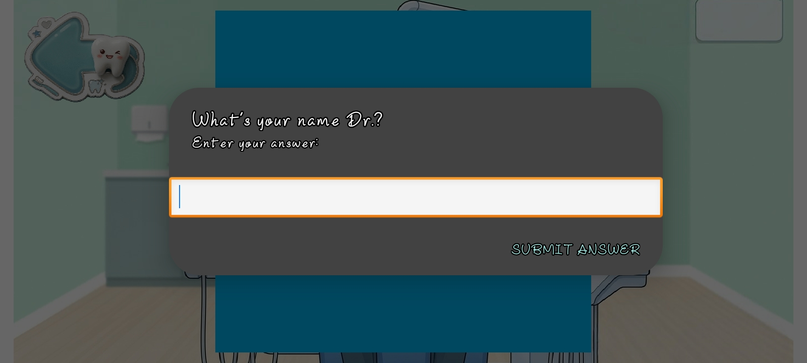
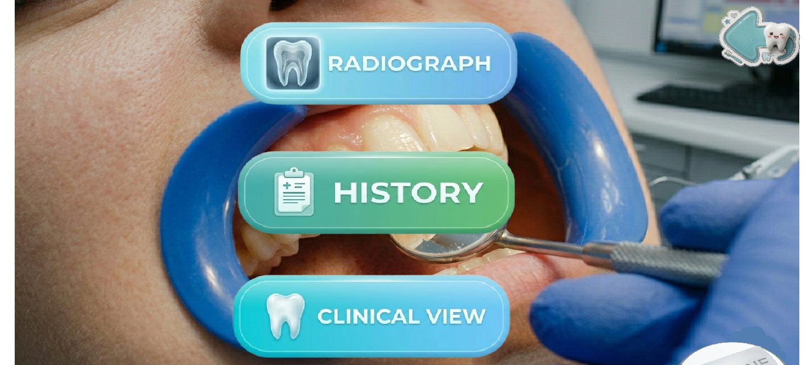
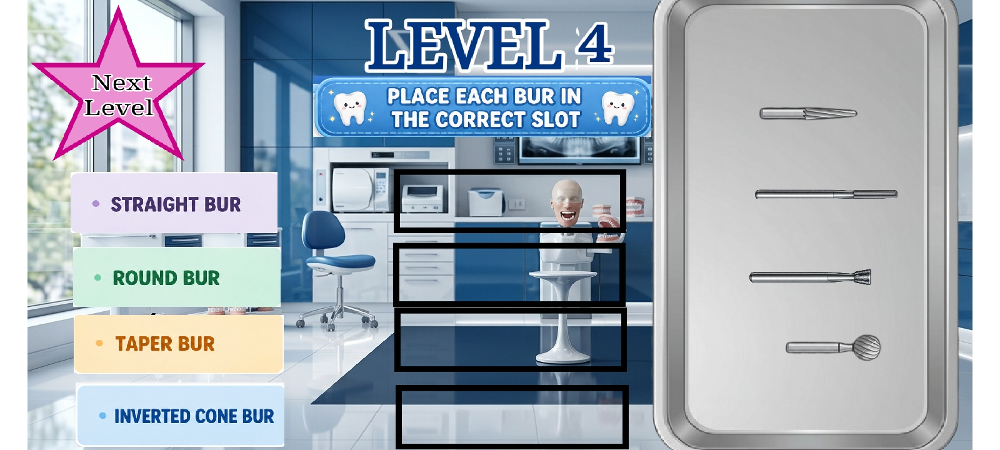
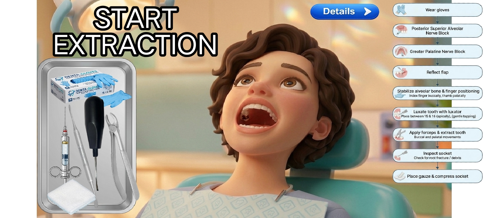

Recognise the instrument
Learn how a mirror, tweezers and spoon excavator differ in design and purpose.
Understand the purpose of a mouth mirror, tweezers, spoon excavator and common dental burs. Then explore tooth numbering and a structured, hypothetical root canal learning case using the Odontix Dental Clinic Simulator.
Created for dental students, beginners and learners who want to connect basic dental theory with simulator-based practice.
Explore the Dental Simulator →Learning dental instruments is not just about memorising their names. A student should understand the instrument's purpose, the type of task it supports, its limitations and the precautions involved in clinical use.
Learn how a mirror, tweezers and spoon excavator differ in design and purpose.
Compare round, fissure, tapered and other burs at a beginner theory level.
Use the FDI two-digit system to identify permanent teeth such as 16, 36 and 44.
Follow the decision-making stages in a hypothetical Tooth 36 endodontic case.
These instruments have different roles. Their selection depends on the examination or procedure being performed; they are not interchangeable.
Main role: Indirect vision and soft-tissue retraction.
A mouth mirror helps the clinician see areas that are difficult to view directly. It can reflect light into the mouth and gently move the cheek or tongue when appropriate.
Common beginner error: Looking only from one angle instead of checking the area systematically.
Main role: Carrying and placing small items.
Dental tweezers, often called cotton pliers, help the operator handle small items such as cotton pellets. The exact task depends on the instrument design and clinical protocol.
Common beginner error: Gripping too tightly or losing control of a small item.
Main role: Controlled removal of soft material from a prepared cavity, when clinically indicated.
A spoon excavator has a small spoon-shaped working end. In restorative dentistry, it may be used to remove soft carious dentine in suitable circumstances. The amount and method of caries removal depend on the lesion, pulp status and treatment plan.
Common beginner error: Assuming every discoloured area must be removed completely without considering the clinical situation.
Main role: Rotary cutting or shaping of dental materials and tooth structure, depending on bur design and indication.
Burs vary by shape, material, size and intended use. The correct selection depends on the procedure, handpiece compatibility and the clinician's training.
Common beginner error: Choosing a bur based only on its appearance without considering the task.
Reading about an instrument is not the same as being trained to use it on a patient. Clinical procedures require appropriate education, supervision, infection-control measures and patient-specific assessment. A simulator is a learning aid, not a substitute for supervised training.
Dental burs are commonly discussed by their head shape and intended application. The descriptions below are introductory; the actual use of a bur depends on its design, material, dimensions and clinical indication.
| Bur category | General shape | Learning focus | Important consideration |
|---|---|---|---|
| Round bur | Spherical or rounded head | Recognising a rounded cutting head and understanding its possible applications in cavity-related procedures. | Size, bur material, tooth anatomy and treatment plan matter. |
| Fissure bur | Elongated head with cutting surfaces | Understanding how elongated shapes differ from round burs. | Do not assume all fissure burs have the same cutting characteristics. |
| Tapered bur | Head narrows or widens along its length | Recognising taper and how bur geometry affects preparation shape. | The required preparation geometry and the specific bur design must be considered. |
| Other burs | Various shapes and designs | Comparing designs rather than treating all burs as identical. | Check the manufacturer's intended use and professional guidance. |
Remember: Round, fissure and tapered are shape descriptions, not complete treatment instructions. There is no single bur that is best for every dental procedure.
In the FDI two-digit system for permanent teeth, the first digit identifies the quadrant and the second digit identifies the tooth position from the midline. In the permanent dentition, positions run from 1 to 8.
| First digit | Quadrant | Example | Tooth identification |
|---|---|---|---|
| 1 | Upper right | 16 | Permanent maxillary first molar |
| 2 | Upper left | 26 | Permanent maxillary first molar |
| 3 | Lower left | 36 | Permanent mandibular first molar |
| 4 | Lower right | 44 | Permanent mandibular first premolar |
This identification does not tell us whether the tooth has caries, pulpitis or any other disease. Diagnosis requires clinical assessment and, when indicated, appropriate investigations.
This case is a teaching scenario designed to explain clinical reasoning. It is not a real patient record, and it does not claim that a patient was treated or that a clinical outcome was achieved in the Odontix simulator.
Tooth: 36 — permanent mandibular left first molar.
Learning topic: How a clinician approaches the assessment of a tooth that may require endodontic treatment.
Scenario: A hypothetical patient reports pain in the lower-left posterior region. The tooth number is provided for learning, but the cause of pain is not assumed.
A clinical assessment begins with questions about the onset, duration, character and triggers of pain. The clinician also asks about swelling, previous treatment, relevant medical history and other symptoms.
Learning question: Does the history suggest a pulpal, periodontal, traumatic or another possible source of pain? Symptoms guide the assessment but cannot establish the diagnosis alone.
The clinician examines the tooth and surrounding tissues and selects appropriate tests according to the findings. Depending on the situation, assessment may include visual examination, pulp sensibility testing, percussion, palpation, periodontal evaluation and dental imaging.
Each finding must be interpreted in context. No single test should be treated as a complete diagnosis in isolation.
Endodontic treatment is considered when the diagnosis and overall assessment indicate that it is appropriate. The clinician evaluates restorability, periodontal condition, anatomy, risks, alternatives and the patient's needs before deciding on treatment.
A tooth number or a report of pain alone is not enough to conclude that root canal treatment is necessary.
After studying the case, a learner should be able to explain why tooth identification is only the starting point, why diagnosis precedes treatment selection and why root canal treatment involves more than simply removing pulp tissue.
A virtual dental exercise can help a learner recognise teeth, understand procedure sequences and become familiar with visual representations. Unless a simulator specifically models and validates a clinical step, its animations should not be interpreted as proof of clinical competence. Real patient treatment requires supervised clinical training.
The screenshots below are from the Odontix project. They help visitors understand the visual learning environment and see examples of the simulator's available screens.





The simulator is designed as an educational aid for dental students, beginners and people interested in learning about dentistry.
Learn what an instrument is designed to do and what it cannot do. A mouth mirror improves visibility; it does not diagnose disease.
Bur geometry, material, size and intended use differ. Selection requires an understanding of the procedure and the manufacturer's guidance.
Knowing that tooth 36 is a lower-left first molar does not establish the cause of symptoms or the treatment required.
Learn why a procedure may be indicated, what alternatives exist and what findings would change the treatment plan.
Simulation can support knowledge and familiarity, but real clinical skills require appropriate instruction, supervision and assessment.
Answer each question before opening the explanation.
Answer: It assists indirect vision and can help reflect light or gently retract soft tissues when appropriate.
Answer: Cotton pliers. They are used to carry or place small items, depending on the clinical task.
Answer: The spoon excavator. It can be used for controlled removal of soft material from a cavity when indicated.
Answer: The permanent mandibular left first molar.
Answer: No. A diagnosis and treatment decision require clinical assessment and relevant investigations.
Answer: No. Bur choice depends on its design, dimensions, intended use and the specific clinical task.
Use recognised dental education resources alongside this introductory guide. The following links provide additional background for learners.
Background information about endodontic treatment and root canal care.
An accessible overview of root canal treatment for patients and learners.
Explore international dentistry resources and professional information.
This page is an introductory educational resource, not a substitute for textbooks, formal teaching, current clinical guidelines or supervised practice.
Explore the Dental Clinic Simulator and connect basic dental theory with virtual exercises.
Explore Dental Game Visit Odontix HomeThis learning guide is published by Odontix, a dental education project created by Dr. Taniya Gandhi, BDS. Its aim is to make introductory dental concepts more accessible through educational articles and a dental clinic simulator.
Questions, corrections and suggestions are welcome:
Email: tanugandhi1000@gmail.com
Instagram: @odontix.dental